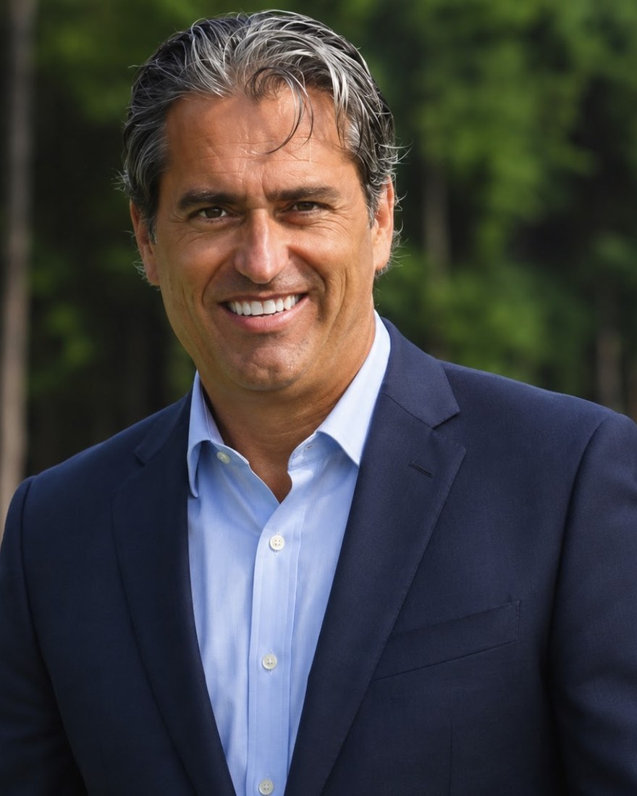
Lon Grundy
Chief Operating Officer, World Golf Village
More than thirty-five years running golf and resort operations, and only four companies in all that time. Texas to Arizona to California to Georgia, and now the Atlantic coast of Florida.
WHERE I'VE WORKED
Ten roles, four companies
Marriott, Troon, Hilton, and Reynolds. Select any role for its scale, its setting, and what came of it.
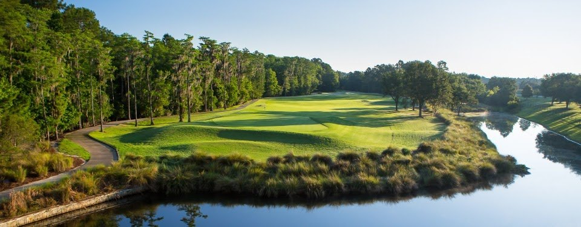
TROON · 2018
World Golf VillageCURRENT
Chief Operating Officer, Troon
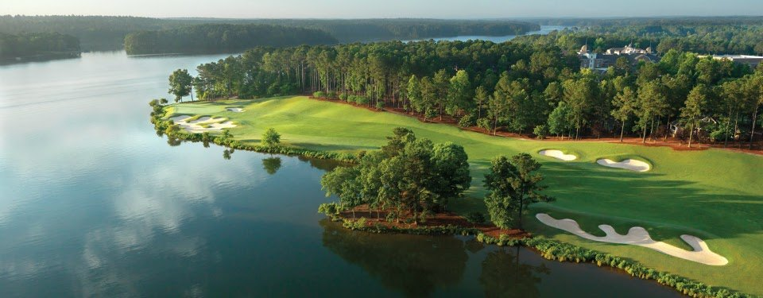
REYNOLDS · 2015
Reynolds Lake Oconee
General Manager
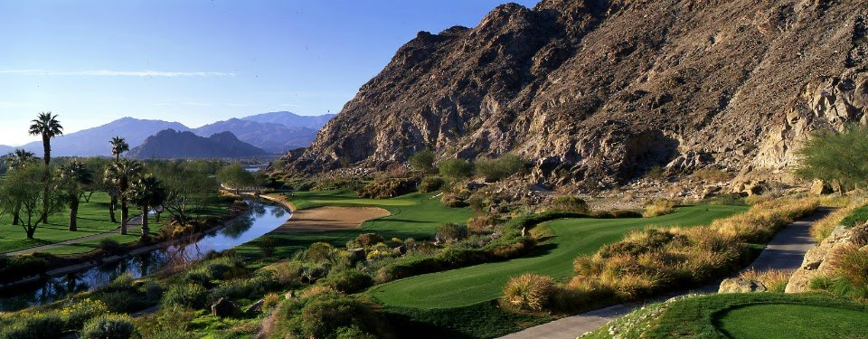
HILTON · 2013
PGA West, The Citrus Club, and La Quinta Resort
Executive Director, Hilton
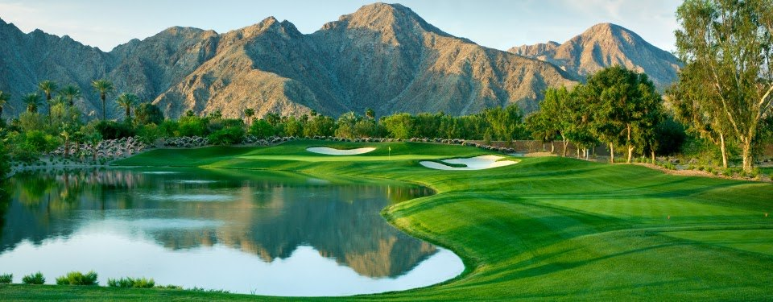
TROON · 2011
Indian Wells Golf Resort
General Manager, Troon
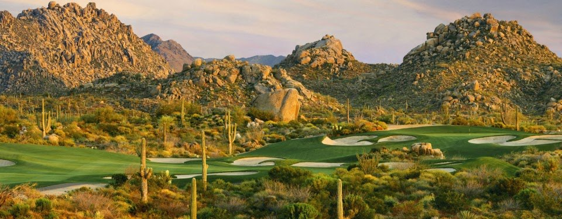
TROON · 2008
Troon North Golf Club
General Manager, Troon
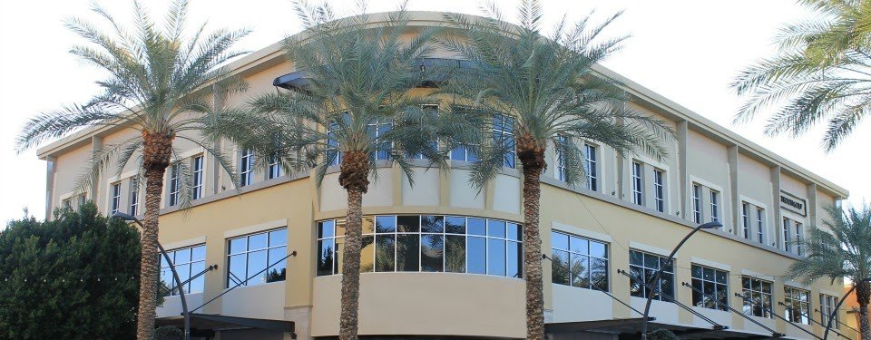
TROON · 2003
Troon headquarters
Regional Director
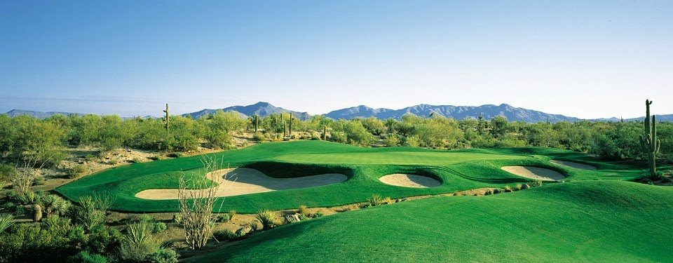
TROON · 2001
Legend Trail Golf Club
General Manager, Troon
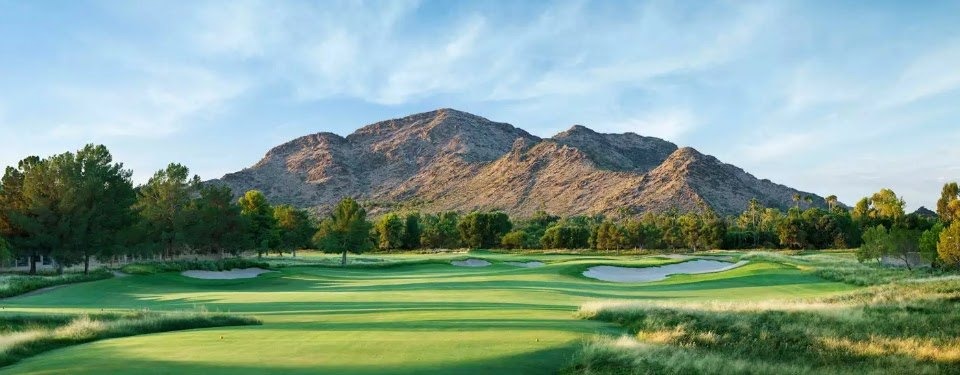
MARRIOTT · 1999
Camelback Golf Club
Head Golf Professional, Marriott
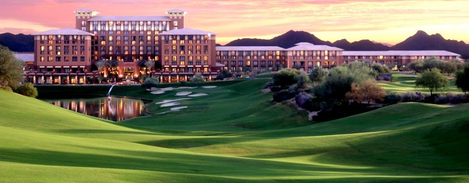
MARRIOTT · 1996
Kierland Golf Club
Assistant Golf Professional, Marriott
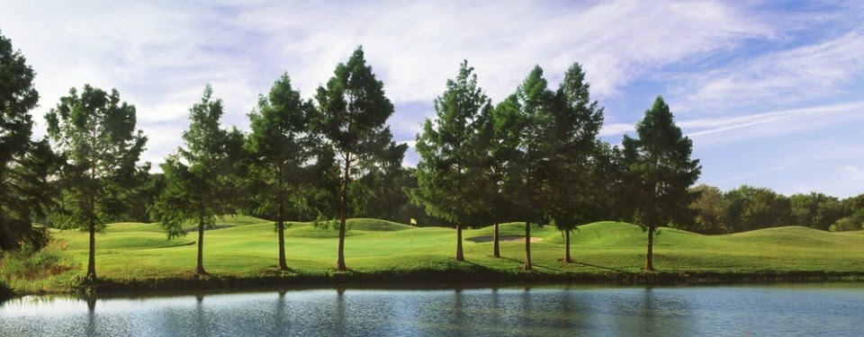
MARRIOTT · 1990
Golf Club at Fossil Creek
Assistant Golf Professional, Marriott